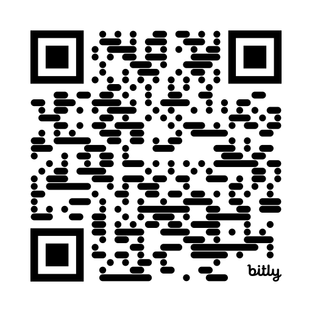

The problem
When polished output hides the thinking that never happened.
On AI, history, and the difficulties worth keeping
Preserving historical inquiry through pedagogical friction.
Micah Miner · Beach Park District 3 · micahminer.com

Scan or tap to open the deck bit.ly/4ozhgMtWhen polished output hides the thinking that never happened.
What historical thinking requires, and what frictionless AI bypasses.
Friction, C.O.R.E., and H.E.A.R.T. as a principled middle path.
Concrete moves, equity, and a task you redesign today.
What got skipped: the sourcing, contextualizing, and corroborating that turn five documents into a defensible claim. The essay is the residue of historical thinking — produced here without any of it.
What got skipped: the social risk of stating a claim and being questioned. A simulated seminar performs the discourse without anyone becoming answerable for a position.
What got skipped: the labor of reading against the grain to build the counterargument yourself. Handed the rebuttal, the student never has to think with the text.
The artifact arrives. The question is whether the thinking ever happened.
Uses AI to surface more sources, generate a position to argue against, and get feedback — then does the sourcing, weighing, and arguing herself.
Asks AI for the thesis and the evidence, edits the wording, and turns it in. The historical thinking happened somewhere else, to someone else.
Same artifact. Opposite learning. The difference is invisible on the page.
If AI can perform the cognitive labor of historical thinking, what happens to the learning that labor was supposed to produce?
Loses the tool students will use anyway — and the teachable moment with it.
Loses the struggle that builds the thinking, behind polished output.
Keep the difficulties that do the teaching; use AI where it genuinely amplifies.
This is not first an integrity problem. It is a learning problem — and a design problem.
National reports show rapid growth in a short policy window.
Diliberti et al., 2024; Doss et al., 2025
Practice is moving faster than guidance or training.
Kaufman et al., 2025
Silence leaves teachers and students to navigate the defaults alone.
Kaufman et al., 2025
The defaults are being set for us — in interfaces and pacing pressure — while the policy room stays empty.
Understanding changes when new evidence won't fit old schemas — the discomfort that forces accommodation.
Desirable difficulties: conditions that feel harder in the moment produce more durable, transferable learning.
Thinking is effortful — and that effort is the mechanism, not the obstacle.
The same task can build historical thinking for one student and block the door for another.
Difficulty that builds the sourcing, weighing, or arguing the learner would not otherwise construct.
Difficulty that blocks access, participation, or demonstration without building any historical thinking — decoding load, language barriers, confusing logistics.
For whom does this difficulty build historical thinking — and for whom does it just block the door?
Not pro- or anti-tech — a habit of asking what a tool changes. "Technology inevitably involves trade-offs."
Run a task you already assign through these questions. They turn "Is AI allowed?" into "What human work does this task require?"
If AI performs the answer to "what is it for," the task no longer does its job.
Five sources on the causes of the American Revolution. Build and defend an argument about which cause mattered most — sourcing, contextualizing, and corroborating across documents that don't agree.
The classic move history teachers assign — and the one AI handles fastest.
Paste the prompt, receive a sourced thesis with body paragraphs, polish the wording, submit. The artifact is strong. The sourcing, corroboration, and argument never happened — a correct answer with no one home.
Strong output, zero formation. Invisible at the grade level.
Source three documents cold and stake an initial claim. Then ask AI for the strongest rival interpretation, test it against the documents, defend your thesis in seminar, and revise against a new source the tool never saw. Same tool — opposite formation.
AI enters after the thinking, as a sparring partner, not before it as a ghostwriter.
Practice the design judgment: rebut a fluent AI in The Devil's Advocate, protect contextualization in Out of Time, build defensible civic action plans in Informed Action, navigate polarized classroom moments in Common Ground, interrogate AI claims in Keepers of Inquiry, judge sources in Keeper of the Source, or calibrate difficulty in the general Friction Lab.
Translation, reading-level support, and accessibility so the historical thinking is reachable — not removed.
Generate the strongest counter-thesis — even to the Federalist Papers — then make students rebut it with evidence.
Surface additional sources and perspectives, leaving more time for the weighing that matters.
Low-stakes questioning and revision between conferences with the teacher.
Amplify the weighing. Never outsource it.
Civic reasoning in practice: test ownership, map stakeholders, and weigh trade-offs under pressure in the Informed Action game.
The support to use them well — training, policy, AI literacy — did not.
"Struggling" labels route some students to thinner content; default narratives skew Eurocentric — deciding whose past is told and who gets the simplified version.
Remove barriers unrelated to historical thinking; keep the struggle that is the historical thinking.
Don't preserve exclusion in the name of rigor.
Response: teach students how to think, not what to think. Multiple sourced perspectives and a transparent method make academic rigor the through-line.
Response: lead with H.E.A.R.T. — honesty and respect for each student's core identity; debate both sides from evidence, in a classroom built on dignity.
Response: slow the fast media. C.O.R.E. respect and structured discourse over reaction; name how feeds curate the conflict in the first place.
Our job: teach students how to think, not what to think.
Practice it: take the teacher's chair in Common Ground — five charged classroom moments, judged by your C.O.R.E. and your H.E.A.R.T.
Play Common Ground ↗The past is not settled, and neither is the classroom.
Which one task will you redesign first — and what struggle will you protect?
How do you keep friction productive without making it a barrier?
If AI can produce the answer, what is history class now for?